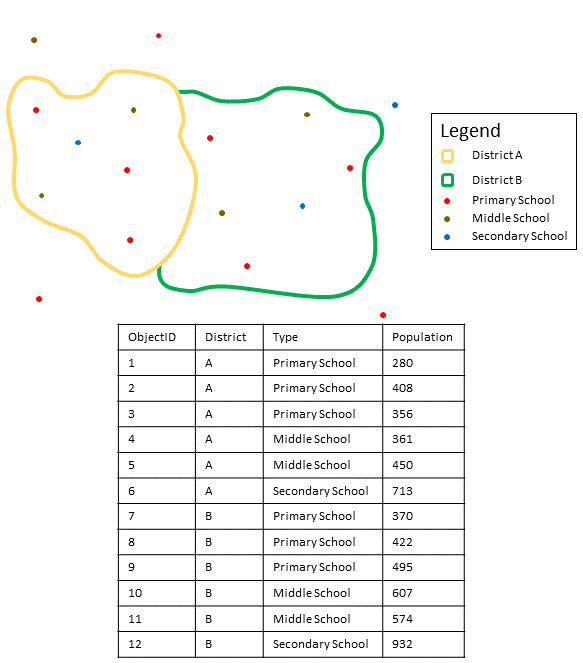
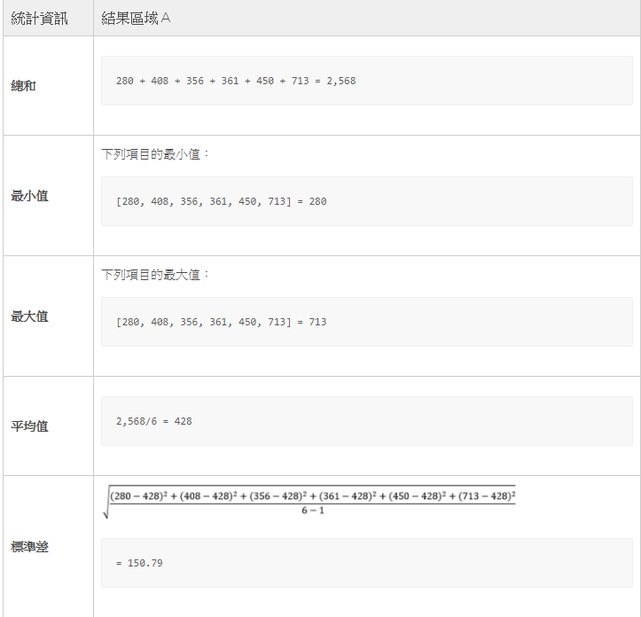
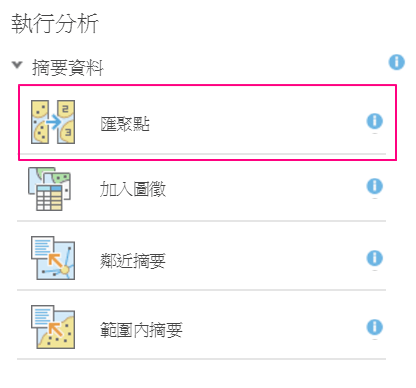
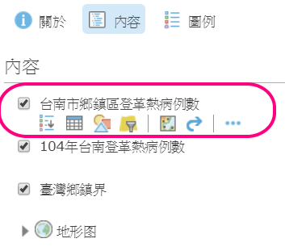
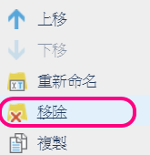

使用空間統計計算每個鄉鎮包含多少登革熱病例數
本小節中，我們將使用空間統計分析功能，計算出每個鄉鎮內，共發生多少起登革熱病例。我們將使用到空間統計中的匯聚點分析，它可以幫助我們算出每一個多邊形內，含有多少個點資料。
如果您的點資料內，含有一些數值欄位，也可以一併進行統計計算。例如你可以使用此工具分析出一年內，台灣每個縣市發生颱風災害的次數，並且算出每個縣市的死傷人數總和，平均災損等資訊。


請依照以下步驟，計算出台南市每個鄉鎮內各有多少登革熱病例吧!
點選【分析】按鈕
展開【摘要資料】選項，選擇【匯聚點】分析

請參考下圖輸入分析參數，輸入完成後點選【執行分析】
計算完成後，結果圖層將自動加到地圖中

滑鼠移動到【台灣鄉鎮界】圖層上，點選【‧‧‧】按鈕，選擇【移除】

滑鼠移動到【台南登革熱病例數】圖層上，點選【‧‧‧】按鈕，選擇【移除】